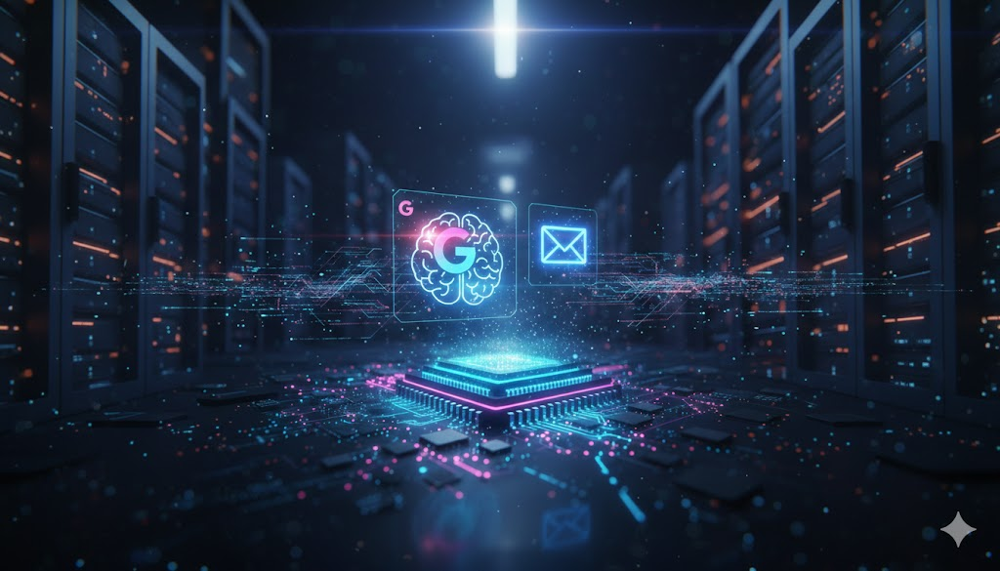

Google Gemini rompe a barreira do tempo com processamento quântico
O Google anunciou hoje uma atualização sem precedentes para o ecossistema Gemini. Através da integração com o novo processador quântico Sycamore 2, a IA agora é capaz de realizar inferências complexas em milissegundos, algo que levaria dias nos servidores convencionais.
O fim da latência na IA Generativa
Até então, o grande gargalo da inteligência artificial era a dependência de grandes data centers e a latência de rede. Com o processamento quântico operando localmente em infraestruturas híbridas, o Gemini 2026 consegue antecipar as necessidades do usuário antes mesmo do comando final ser digitado.
O que muda para o usuário final?
Para quem utiliza smartphones como o iPhone 17 Pro Max ou o Pixel 10 Pro, essa integração significa que a tradução simultânea e a edição de vídeo via IA serão instantâneas, sem necessidade de upload para a nuvem.
A segurança também ganha um novo patamar: com a criptografia pós-quântica do Gemini, os dados pessoais tornam-se virtualmente impossíveis de serem hackeados por tecnologias atuais.